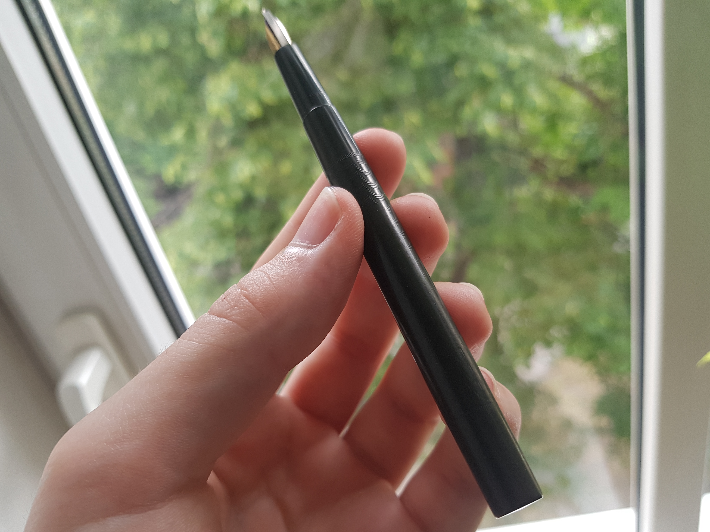
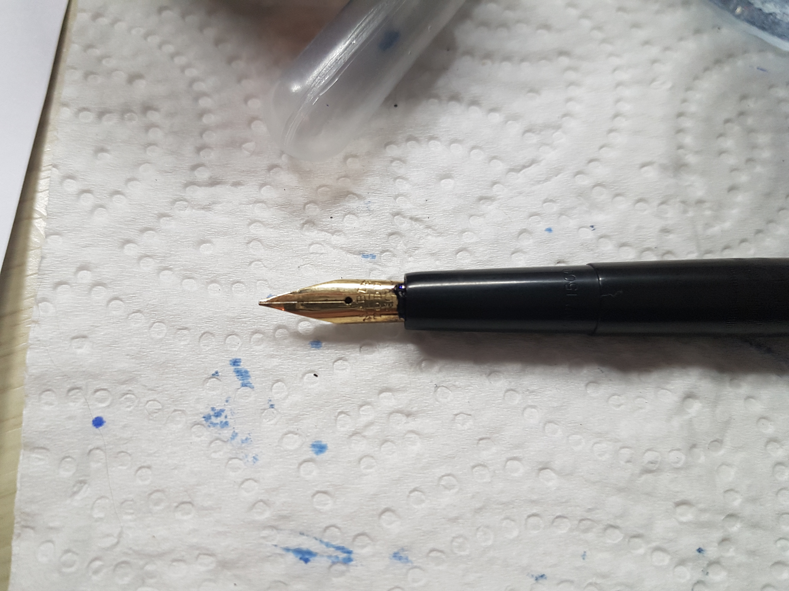
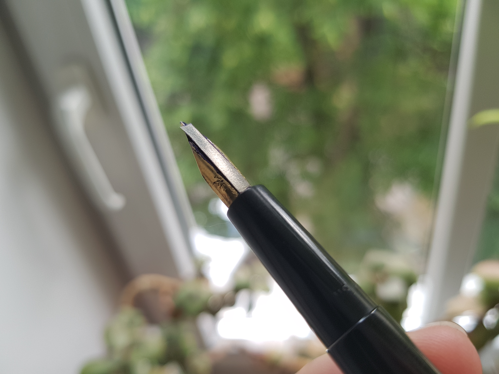
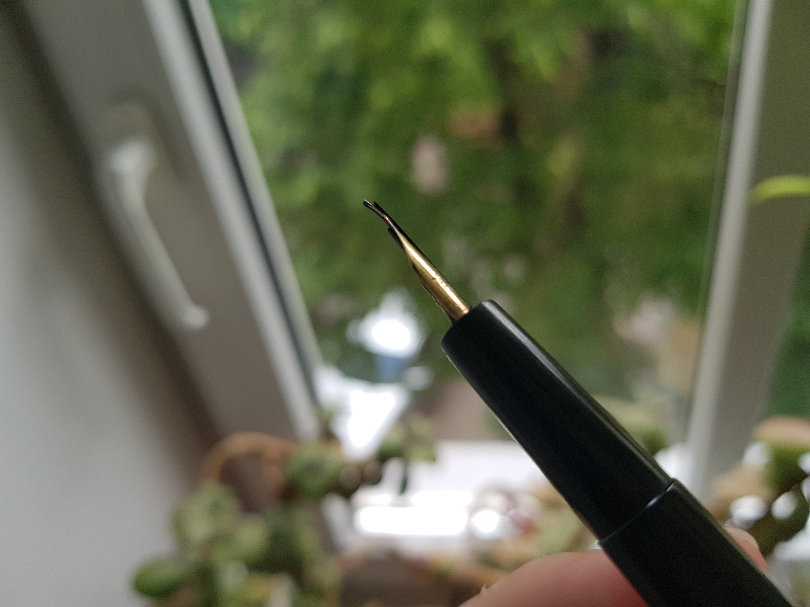

Mabie Todd & Co. Ltd. Swan 1512 review |
| 
It isn't often that one gets to lay hands on a relic from the (what I consider to be) dawn of the modern age, well over a century ago. Not many things survive from the Edwardian period, even less from the event that ended it - the First World War, yet this pen does and is an example of the best pen making of the time. Bearing the imprint "Made in the USA during war" it has survived roughly 106 years of the world and going. Right, enough with the sentimental soppiness, let's get to the question at hand: how good is it as a pen? Made of black chased hard rubber, it is very comfortable in the hand, being both light and warm, yet not so light to be off-putting, especially when it is full of ink. Speaking of filling, it is an eyedropper filler, quite exemplary of the pens of the time (though the first self- filers had appeared by then) the whole barrel fills with ink. Also typical of the time is the slenderness of the pen. The section measures 7-8 mm in diameter, the barrel - 10 mm. This may be offputting to people with bigger hands, but I don't mind. It does feel a bit narrow but after a while I get used to it. Going along to the writing end, the pen features an incredibly flexy 14ct gold nib (point if we're being period-accurate). The feed is a late example of a over-and-under feed. This kind of feed was popular during the first decade of the 20th century but was getting phased out by WWI in favour of the more advanced ladder feed. The biggest drawback of the over-and-under feed design is the lack of any fissures for storing excess ink. If you shake it enough you will get a nice blob on the page. In my experience writing with it it really needs to be shaken determinatedly for this to happen, though. Another drawback is the fragility of the over bit. On my pen and many others it has snapped off. I replaced it temporarily with a thin strip of steel and it does the job for now. This feed does offer some advantages, chiefly, it keeps the nib supplied with ink for a long time. I was able to pick up the pen and write immediately after as much as a day of sitting uncapped, which is a good thing, because I haven't got the cap to it. Writing wise, the pen is as smooth as butter with only a hint of pleasurable feedback. The 14ct gold nib is a medium as indicated by the MED imprint on the tail end of the pen (the xx12 suffix is the code for a medium nib too). Even according to the modern nib widths, it is a medium. It's the flexiest nib I've ever handled and the feed keeps it primed very well (at least with LAMY blue ink). It exhibits no railroading even at the most extreme flexes. 
|
 |
| Computers |
| Reviews |
| Repair |
| PC game reviews |
| Fountain pens |
| Reviews |
| Repair |
| Misc |